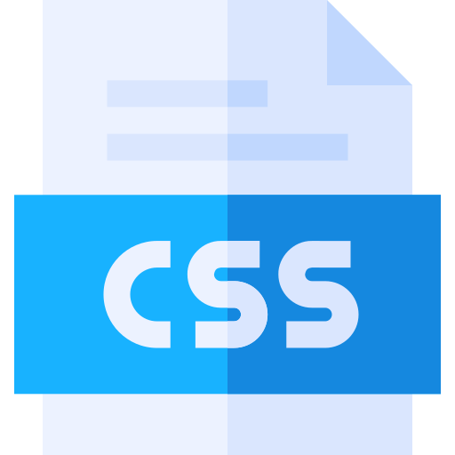

Algumas Tecnologias associadas ao Desenvolvimento Web
 | HTML | HTML (abreviação para a expressão inglesa HyperText Markup Language, que significa Linguagem de Marcação de Hipertexto) é uma linguagem de marcação utilizada na construção de páginas na Web. |
|---|
|  | CSS | Cascading Style Sheets (CSS) é um mecanismo para adicionar estilo (cores, fontes, espaçamento etc) a um documento Web. Em vez de colocar a formatação dentro do documento, o CSS cria um link (ligação) para uma página que contém os estilos. |
|---|
 | JavaScript | JavaScript é uma linguagem de programação interpretada. Foi originalmente implementada como parte dos navegadores Web para que scripts pudessem ser executados do lado do cliente e interagissem com o usuário sem a necessidade deste script passar pelo servidor, controlando o navegador, realizando comunicação assíncrona e alterando o conteúdo do documento exibido. |
|---|
 | PHP | PHP (um acrônimo recursivo para "PHP: Hypertext Preprocessor") é uma linguagem interpretada livre, usada originalmente apenas para o desenvolvimento de aplicações presentes e atuantes no lado do servidor, capazes de gerar conteúdo dinâmico na World Wide Web. |
|---|


 Desenvolvimento Web
Desenvolvimento Web